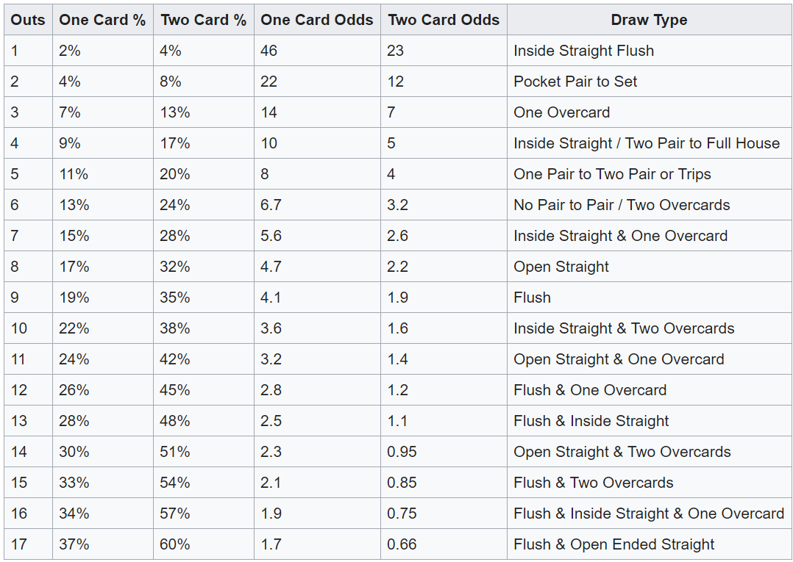

Probability is the branch of mathematics that deals with the likelihood that one outcome or another will occur. For instance, a coin flip has two possible outcomes: heads or tails. The probability that a flipped coin will land heads is 50% (one outcome out of the two); the same goes for tails.
When dealing with a deck of cards the number of possible outcomes is clearly much greater than the coin example. Each poker deck has fifty-two cards, each designated by one of four suits (clubs, diamonds, hearts and spades) and one of thirteen ranks (the numbers two through ten, Jack, Queen, King, and Ace). Therefore, the odds of getting any Ace as your first card are 1 in 13 (7.7%), while the odds of getting any spade as your first card are 1 in 4 (25%).
Unlike coins, cards are said to have “memory”: every card dealt changes the makeup of the deck. For example, if you receive an Ace as your first card, only three other Aces are left among the remaining fifty-one cards. Therefore, the odds of receiving another Ace are 3 in 51 (5.9%), much less than the odds were before you received the first Ace.
Players don’t play poker in a vacuum; each player’s hand must measure up against his opponent’s, especially if a player goes all-in before the flop. Here are some sample probabilities for most pre-flop situations:
| Your Private Cards | Your Opponent's Private Cards | Winning Probability |
|---|---|---|
| High Pair | Two Low Non-Pair cards | 83% |
| High Pair | Low Pair | 82% |
| Middle Pair | One High Card and One Low Card | 71% |
| High Non-Pair Cards | Two Low Non-Pair Cards | 63% |
| High Non-Pair Cards | Low Pair | 55% |
Now let’s look at the chances of certain events occurring when playing certain starting hands. The following table lists some interesting and valuable hold’em math:
| The Probability that... | Probability of occurrence | Odds |
|---|---|---|
| Non-pairs will make at least one pair | 32.00% | 2-to-1 |
| Two suited cards will make a flush | 6.50% | 15-to-1 |
| Two suited cards will flop a flush | 0.85% | 118-to-1 |
| Two suited cards will flop a four flush | 10.90 | 9-to-1 |
| A pair will flop a set | 12.00% | 8-to-1 |
| A pair will flop four of a kind | 0.25% | 400-to-1 |
Many beginners to poker overvalue certain starting hands, such as suited cards. As you can see, suited cards don’t make flushes very often. Likewise, pairs only make a set on the flop 12% of the time, which is why small pairs are not always profitable.
If you do see a flop, you will also need to know what the odds are of either you or your opponent improving a hand. In poker terminology, an “out” is any card that will improve a player’s hand after the flop.
One common occurrence is when a player holds two suited cards and two cards of the same suit appear on the flop. The player has four suited cards and needs one more of the remaining nine cards of that suit to make a flush. In the case of a “four-flush”, the player has nine “outs” to make his flush.
A useful shortcut to calculating the odds of completing a hand from a number of outs is the “rule of four and two”. The player counts the number of cards that will improve his hand, and then multiplies that number by four to calculate his probability of catching that card on either the turn or the river. If the player misses his draw on the turn, he multiplies his outs by two to find his probability of filling his hand on the river.
In the example of the four-flush, the player’s probability of filling the flush is approximately 36% on the Turn and River (9 outs x 4) and 18% on the River(9 outs x 2).
Another important concept in calculating odds and probabilities is pot odds. Pot odds are the proportion of the next bet in relation to the size of the pot.
For instance, if the pot is $90 and the player must call a $10 bet to continue playing the hand, he is getting 9 to 1 (90 to 10) pot odds. If he calls, the new pot is now $100 and his $10 call makes up 10% of the new pot.
Experienced players compare the pot odds to the odds of improving their hand. If the pot odds are higher than the odds of improving the hand, the expert player will call the bet; if not, the player will fold.
A “bad beat” happens when a player completes a hand that started out with a very low probability of success. Experts in probability understand the idea that, just because an event is highly unlikely, the low likelihood does not make it completely impossible.
A measure of a player’s experience and maturity is how he handles bad beats. In fact, many experienced poker players subscribe to the idea that bad beats are the reason that many inferior players stay in the game. Bad poker players often mistake their good fortune for skill and continue to make the same mistakes, which the more capable players use against them.
One of the most important reasons that novice players should understand how probability functions at the poker table is so that they can make the best decisions during a hand. While fluctuations in probability (luck) will happen from hand to hand, the best poker players understand that skill, discipline and patience are the keys to success at the tables.